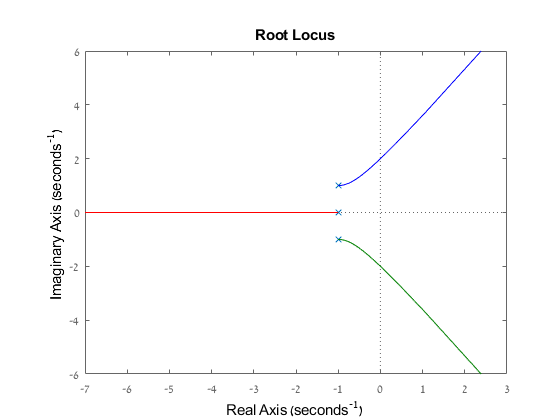
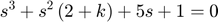
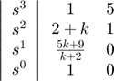
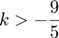
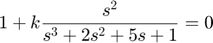
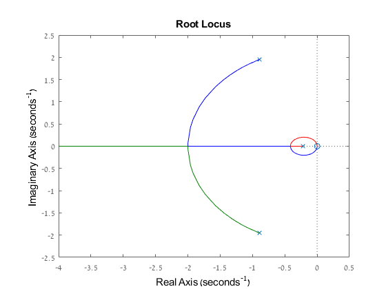
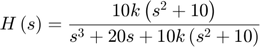
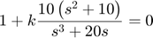

Contents
Student ID
ID = 316098052; disp(ID)
316098052
1 Sketch a Root locus
s =tf('s');
H = 1/((s^2+2*s+2)*(s+1))
rlocus(H)
H =
1
---------------------
s^3 + 3 s^2 + 4 s + 2
Continuous-time transfer function.
 2 State space system
1. The characteristic equation of the system is:

2. Following the Routh Hurwitz algorithem:

It can be obtained that for $ the system is stable.
3. According to the equation that describes the feedback of the open loop:

The Root Locus:
Q = [0 1 0 0] P = [1 2 5 1] rlocus(tf(Q,P))
Q =
0 1 0 0
P =
1 2 5 1
 3 Pilot crane
The system transfer function:

The characteristic equation:

According to Routh Hurwitz algorithem, the system will be stabled for any positive k. Therefore from the Root Locus graph, the k that will bring the system to maximum damping rate (real part of the poles is smallest) is:

Q = [0 10 0 100]; P = [1 0 20 0]; rlocus(tf(Q,P)) [R,K] = rlocus(tf(Q,P)); min_array = real(R(2,:))*(-1); index = find(min_array == max(min_array(:))); k_optimal = K(index);